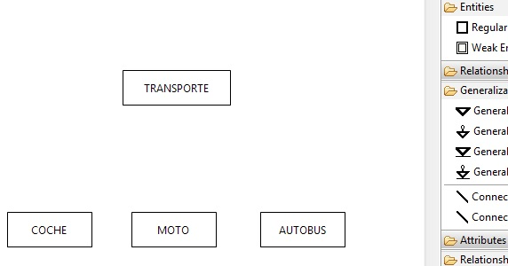
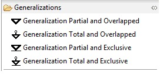
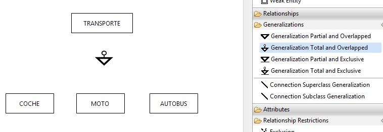
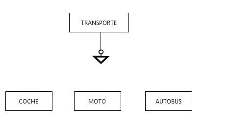
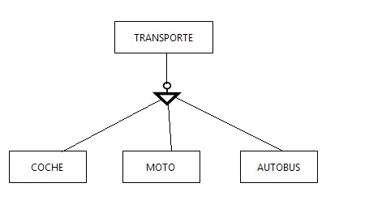

Lo primero que tenemos que hacer es crear las 4 entidades. Para ello nos vamos al menú Palette, desplegamos la pestaña Entities y creamos 4 entidades que en nuestro caso serán Transporte, Coche, Moto y Autobús.

En este paso procedemos a dibujar el tipo de generalización que deseamos crear. Tenemos 4 tipos de generalización disponibles que son:


Ahora uniremos a la generalización con la entidad Transporte. Para ello, seleccionamos en el menu Generalizations, el elemento Connection Superclass Generalization y trazamos una conexion desde la generalización hacia la entidade especializada Transporte. Nos quedará algo similar a la siguiente imagen:

A continuación tenemos que unir a generalización las entidades especialidadas Coche, Moto y Autobús . Para ello, seleccionamos en el menu Generalizations, el elemento Connection Subclass Generalization y trazamos 3 conexiones desde la generalización hacia las entidades. Nos quedará algo similar a la siguiente imagen:
